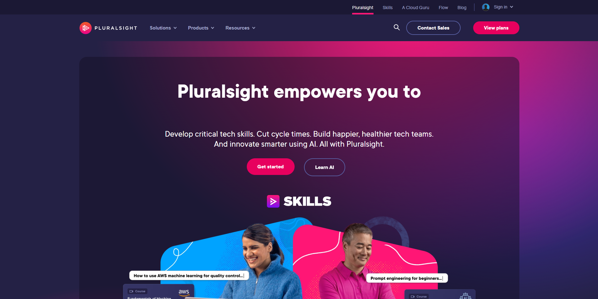

W3schools
Könnyen érthető, példákkal illusztrált anyagok, amelyek az alapoktól a haladó szintig vezetnek, ideális gyors referenciákként is.
CodeAcademy
Interaktív platform, amely azonnali visszajelzést ad a kódra, és külömböző szintű tanfolyamatokat kinál kezdőknek és haladóknak eggyaránt.
GeeksforGeeks
Széleskörű programozási és webfejlesztési források, beleértve a részletes cikkeket, kódpéldákat és interjúkérdéseket, amelyek ideálisak azok számára, akik mélyebben szeretnék megérteni az algoritmusokat és az adatstruktúrákat.
FreeCodeCamp
Ingyenes, közösség által támogatott platform, amely projektalapú tanulással segít HTML, CSS és JavaScript elsajátításában.
MDN Web Docs
A Mozilla hivatalos dokumentációja, amely átfogó és részletes útmutatást nyújt webes technológiákról. mint a HTML, CSS és JavaScript.
Udemy
Széles tanfolyam választék, gyakran kedvezményekkel, amely lehetőséget ad konkrét témák mélyebb tanulmányozására
pluralsight
Professzionális fejlesztők számára készült tananyagok, amelyeket iparági szakértők készítettek, ideális munkahelyi képzésekhez.
edX

Egyetemek által kínált ingyenes és fizetős tanfolyamok, amelyek mélyebb és strukturáltabb tanulási élményt kínálnak
The Odin Project
Ingyenes projektalapú tananyag, amely az alapoktól a szakértői szintig segít a webfejlesztésben, különösen jó önálló tanulóknak.
Treehouse
Fizetős platform, amely gyakorlati megközelítéssel és valós projektek segítségével tanít, jó választás azoknak, akik gyorsan szeretnének gyakorlati tudást szerezni.
kattintások az oldalon:
0